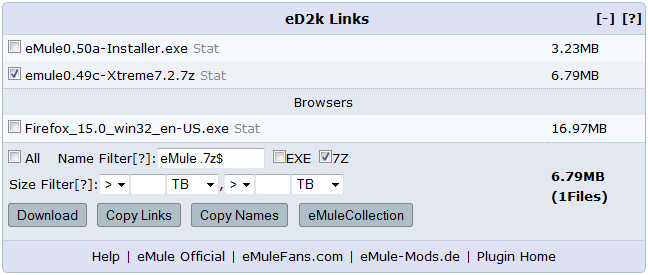
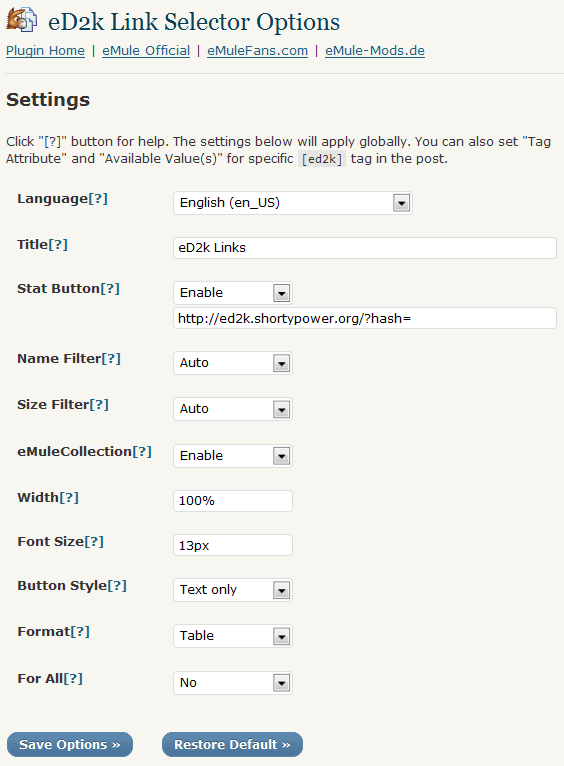

by tomchen1989 (Plugin Home; eMuleFans.com; email: tomchen1989/ατ/yahoo.com.cn or admin/ατ/emulefans.com)
eD2k Link Selector WordPress plugin may convert BBCode tags [ed2k][/ed2k] and [emule][/emule] that contain eD2k (eMule) links or other text to a nice table to display them with some filters which make it easy to select.
You can download eMule from eMule official site or emule-mods.de, or use other clients like aMule.
If you read Chinese (Simplified or Traditional), you may find Chinese introductions about eD2k Link Selector plugin and a eMule/eDonkey softwares' list from eMuleFans.com. VeryCD and its easyMule are fake eMules, don't use them. 如果您阅读中文，请至eD2k Link Selector插件发布页（中文）查看中文的用法、功能的介绍与讨论、插件效果演示。您可在eMule官方网站下载官方eMule，或在eMuleFans.com电骡爱好者blog和emule-mods.de上找到适合您使用的eMule Mod，或用诸如aMule等其他客户端。请注意：VeryCD及其easyMule和emule.org.cn站点都与eMule或电驴官方无关，不推荐使用VeryCD的软件。
ed2k-link-selector folder to /wp-content/plugins/ directory. Activate the plugin through the "Plugins" menu in WordPress.
[ed2k] or [emule] tag in your posts like this:
[ed2k] ed2k://|file|eMule0.50a-Installer.exe|3389035|3D366ED505B977FC61C9A6EE01E96329|h=EKE4PSKRQ65MWEPFTRDSAHW5VMDIMFAJ|/ ed2k://|file|emule0.49c-Xtreme7.2.7z|7124399|071F8D79E5BDC96208079ADE1C2443B0|h=THOGM3WRM4OGNCQHDQBS5JFFAUTQNZEU|/ Browsers ed2k://|file|Firefox_15.0_win32_en-US.exe|17789456|07e4607e4dc411237be1ce0b8a2a5c59|/|sources,78.47.189.237:14091|/ [/ed2k]
It renders as:
In your "HTML" and "Visual" editor, a "eD2k" button and a mule image button respectively, may help you insert such code:
In your RSS feed, such code will render as:
ed2k: eMule0.50a-Installer.exe
ed2k: emule0.49c-Xtreme7.2.7z
Browser
ed2k: Firefox_15.0_win32_en-US.exe
You may find and open it in your "Settings" menu:
Click the "[?]" to see the description for each item.
[ed2k] tags in content from a single post or a page will be converted to that table, while home, feed, category, archive pages and excerpt from a post or a page use the simple anchor links. However it can be changed by Options or by attributes of the BBCode (see below).
Click and hold down SHIFT key to toggle multiple checkboxes.
Name Filter helps you select files by their names or extensions. Case insensitive.
Symbols Usage:
AND: space( ), +;
NOT: -;
OR: |;
Escape: two quote marks("");
Match at the start: ^;
Match at the end: $.
e.g.
emule|0.50a -exe to select names that contain "eMule" and "0.50a" but not contain "exe";
^emule 0.50a$ to select names started with "emule" and end with "0.50a";
"emule 0.50a" with quote marks to match exactly a "emule 0.50a", not a "eMule fake 0.50a".
The copy buttons are compatible with all modern broswers.
Click the "[?]" on the selector table to see help infos.
Available attributes for [ed2k] and [emule] (used as: [ed2k attr1=value1 attr2=value2]...[/ed2k])：
| Attribute | Description | Valid Values | Default Value (may be changed by Options) |
|---|---|---|---|
head |
(For the "Table" format) The title. |
[Text]
|
eD2k Links (if you blog in English) |
stat |
(For the "Table" format) Whether to use stat button, and which stat site. |
[Stat site URL prefix];false: Disabled
|
http://ed2k.shortypower.org/?hash= (Shortypower's eD2k Stats) |
name |
(For the "Table" format) Whether to use name filter. |
auto: Auto.Disable if only one link, enable if multiple links; true: Enabled;false: Disabled
|
true |
size |
(For the "Table" format) Whether to use size filter. |
auto: Auto.Disable if only one link, enable if multiple links; true: Enabled;false: Disabled
|
true |
collection |
(For the "Table" format) Whether to show emulecollection button. |
true: Enabled;false: Disabled
|
true |
width |
(For the "Table" format) Width of the table. |
[Width, in %, px, pt or em]
|
100% |
font-size |
(For the "Table" format) Font size of the table. |
[Font size, in %, px, pt or em]
|
13px |
buttonstyle |
(For the "Table" format) Style of buttons. |
0: text only;1: image and text;2: image only
|
0 |
format |
Which format to use for content on single post and page. |
1: Selector table;2: Simple anchor links
|
1 |
forall |
Whether to apply on non-singular pages (pages which are not single posts or pages. Like front page and category pages). |
true: Yes;false: No
|
false |
Example:
[ed2k head='Feel Free to Download These eD2k Links!' size=false] ed2k://|file|eMule0.50a-Installer.exe|3389035|3D366ED505B977FC61C9A6EE01E96329|h=EKE4PSKRQ65MWEPFTRDSAHW5VMDIMFAJ|/ [/ed2k]
We use ed2kls.css in the ed2k-link-selector folder as the default style. If a file named "ed2kls.css" is detected in your current theme folder, this ed2kls.css will be used as your customized style.
The plugin is available in:
All these php, js files of "eD2k Link Selector" by tomechen1989 (tomchen1989/ατ/yahoo.com.cn) are licensed under GNU GPL v2.
ZeroClipboard by Joseph Huckaby is released under MIT License.
I do not assume any responsibility or liability in connection with ed2k links that you post on your blog.
{kind=link}